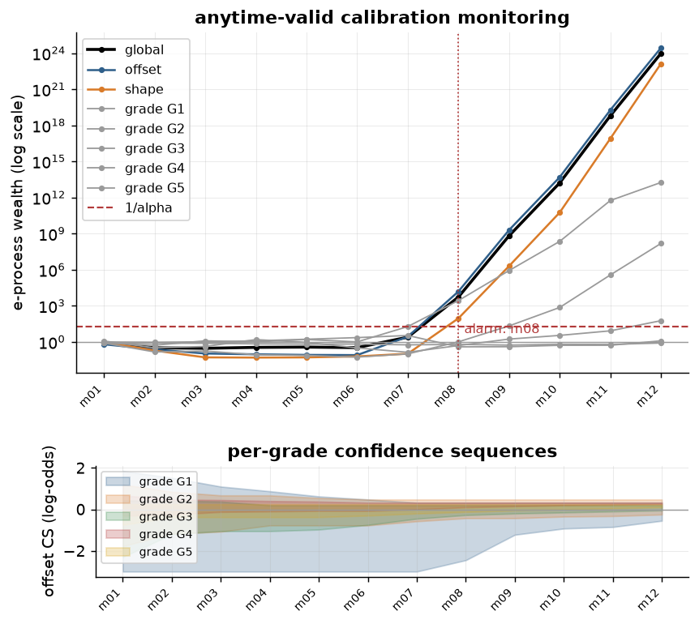

Anytime-valid calibration monitoring¶
The question¶
A calibrated forecast is deployed. Matured outcome batches arrive
periodically, as monthly cohorts of (p_i, y_i) pairs. Is the forecast still
calibrated? And if not, is a level shift enough (re-offset with
LogitOffset) or has the shape changed (re-fit the calibrator)?
The obvious procedure, running binomial_grade_test or Hosmer–Lemeshow every
month and acting on the first rejection, is invalid. Fixed-sample tests
control type-I error only for a pre-specified evaluation window; testing
every window and stopping at the first rejection inflates the error
without bound (with enough looks, a true null is rejected almost surely).
Monitoring is optional stopping by construction, so it needs a guarantee
that survives optional stopping.
E-processes and Ville's inequality¶
An e-process is a non-negative process E_k with E_0 = 1 that is a
supermartingale under the null. Ville's inequality gives, for any alpha:
The rule "alarm the first time E_k >= 1/alpha" therefore has type-I error
at most alpha however long monitoring runs and whenever it stops, the
property fixed-sample p-values cannot provide. p_anytime = min(1, 1/max_k
E_k) is a p-value valid at every stopping time.
The null¶
Observations arrive in a fixed order (arrival order within a batch is arbitrary but frozen). The monitored hypothesis is conditional calibration of the deployed forecast (Henzi & Ziegel 2022; Arnold, Henzi & Ziegel 2023):
Every component below multiplies Bernoulli likelihood-ratio factors
whose conditional expectation under H_0 is exactly 1 for any
predictable alternative q_i (computed from strictly earlier data). The
running product is then a test martingale. The second tool is that the
average of e-values is an e-value (Vovk & Wang 2021), which is how
components and variants combine below.
Components¶
Offset (level) process E_off. Alternative: the true PD is
sigma(logit(p_i) + delta). Two variants, averaged:
- the predictable plug-in: before batch
k,delta_hat_kis theLogitOffsetmode-B solution on batches1..k-1(the shift matching the past outcome rate). It adapts to sustained drift. - the mixture over a fixed grid
delta in {+-0.1, +-0.25, +-0.5, +-1.0}with uniform prior. It protects the first batches, when the plug-in is still noise.
Shape process E_shape. Alternative: Cox recalibration
logit(true) = c + a * logit(p_i) with the predictable plug-in
(c_hat, a_hat) fitted by IRLS on past batches (the same engine as
probcal.metrics.regression). This detects slope drift that no offset can
repair.
Per-grade processes E_grade[g] (when a grade array is passed): the
offset process restricted to grade g, combined by averaging into
E_grades. A single drifting grade can then trip the alarm even when the
portfolio-level mean is preserved.
Global alarm on E = mean(E_off, E_shape[, E_grades]) at level
alpha; component e-values are always reported for diagnosis.

The figure is the whole rule in one view: twelve cohorts of a deployed
beta calibration, the true PD shifted by +0.6 log-odds from month seven
onward. Wealth hovers around 1 while the forecast is calibrated, the
alarm fires at the first crossing of 1/alpha (batch m08), and the
components say what moved: offset and shape both climb here.
The grade panel below shows how unevenly that evidence accrues. Every
grade's confidence sequence tightens, but by m12 only the two
event-rich grades have moved clear of zero: G4 at (+0.25, +0.33) on
490 events and G5 at (+0.10, +0.25) on 559. G1, G2 and G3, with
14, 41 and 155 events, still contain zero, so on their own evidence the
drift is not yet established, even though the portfolio-level alarm fired
four batches earlier. That gap is the point of reading both panels: the
global e-process pools evidence the thin grades cannot supply alone.
Reproduce the figure with docs/scripts/generate_figures.py; the calling
code is in Monitor and act.
A confidence sequence for the current offset¶
Inverting the offset process against a grid of shifted nulls delta_0 in
[-3, 3] ("the deployed forecast, moved by delta_0, is calibrated")
yields a time-uniform (1 - alpha) confidence sequence for the current
calibration-in-the-large offset: with 95% anytime confidence, statements
like "the model is currently 0.15–0.40 log-odds too optimistic". Each null
keeps its own e-process (plug-in alternative; cost O(grid × n) per
batch); a delta_0 once rejected stays rejected, so the sequence is a
running intersection. This half-width is also the natural value for a
recourse engine's buffer_logit (see the treecf guide): a re-offset within
the sequence cannot invalidate a buffered counterfactual.
Per-grade confidence sequences¶
When a grade array is passed, each grade also gets its own time-uniform
confidence sequence for its own offset, built the same way as the
portfolio-level one above (same delta_ci_grid, same predictable-plug-in
alternative), restricted to that grade's slice of the batch and using the
grade's own plug-in d_g in place of the portfolio-level delta_hat. This
answers a question the portfolio-level CS cannot: a single grade drifting
while the portfolio average stays put is invisible to delta_ci, but shows
up in that grade's own MonitorStep.grade_delta_ci[g]. plot_e_process(...,
grades_panel=True) adds a second axes plotting every grade's CS band
(lo/hi) across steps, below the main e-process plot; grades_panel=False
(the default) renders pixel-identically to 0.2.0.
Drift-onset estimate and the since-onset window¶
Each step also carries MonitorStep.log_e_increment: the batch's additive plug-in
log-LR contribution, the offset plug-in's bern_log_lr factor (0 when delta_hat ==
0) plus the shape plug-in's (0 when its plug-in is the identity). e_global is a
logsumexp mixture and is not additive across batches, so it cannot be searched for
where the evidence trail turns; log_e_increment is purely additive and exists for
exactly that purpose.
monitor._onset.estimate_onset(increments) -> int finds k* = argmax_k sum_{j>=k}
increments[j], a backward-CUSUM argmax over that additive series, with ties resolved
to the latest k. This is an estimate, not a change-point test: it carries no
type-I control and no confidence set, only an answer to "which batch does the
accumulated evidence point to". report() runs it whenever an alarm has fired and
exposes the result as MonitorReport.onset_label, and appends a line to reasoning that
names the estimated onset batch and repeats that the backward-CUSUM argmax of the plug-in
log-LR increments is an estimate, not a test. Steps loaded from a pre-0.3 payload carry
log_e_increment = None. That payload records no increments, so a monitor holding any such
step reports onset_label = None, replaces the onset sentence in reasoning with "drift
onset unavailable: steps recorded before 0.3.0 carry no log-e increments (trailing window
used)", and computes its diagnostics on the "trailing" window whatever
recommendation_window says.
By default (recommendation_window="since_onset"), report()'s trailing-window
diagnostics (delta_now, the Cox slope bootstrap CI, the Cox-vs-offset residual LR)
are computed on batches from the estimated onset onward rather than on the full (or
plug_in_window-trimmed) history: once an alarm fires, a window anchored where the
evidence trail actually turns is more informative than one anchored to a config knob
set before any drift was suspected. When plug_in_window is also set, the window
starts at the LATER of the two starts, max(onset_idx, n_batches - plug_in_window),
so a short plug_in_window still bounds how far back the since-onset window can
reach; a plug_in_window of 3 with an onset at batch 2 of 10, for example, uses the
last 3 batches, not the 8 since onset. Escape hatch: recommendation_window="trailing"
restores 0.2.0 behaviour exactly for those diagnostic INPUTS (delta_now, the slope
CI, the residual LR): it ignores the onset estimate and uses plug_in_window (or all
past batches) instead, unconditionally. onset_label and the onset sentence in
reasoning are still populated under "trailing"; only the diagnostic window
differs between the two modes. tests/test_monitor_sim.py::
test_recommendation_correct_on_pure_drift re-runs the 90%-correct gate under the new
default.
Localization accuracy (batches built like docs/scripts/monitor_sim.py's, drift
injected at batch 12 of 24 with shift=0.6, 40 seeded runs, tests/test_monitor_onset.py,
pytest.mark.slow): median |onset − 12| = 1.0 (gate <= 2); error distribution
[0×4, 1×24, 2×5, 3×3, 4, 6, 8, 9].
The recommendation rule: a diagnostic, not a test¶
After an alarm the monitor reports one of re-offset / re-fit, from two
trailing-window diagnostics: recommend re-offset when the Cox slope
bootstrap CI contains 1 and the Cox-vs-offset residual likelihood ratio
(does the 2-parameter correction explain the window materially better than
the offset-only correction?) stays within the chi-square(1) 5% bound;
otherwise re-fit. The shape e-process is always reported alongside
but is deliberately not the discriminator: its alternative family contains
the intercept, so it fires under pure level drift too and cannot separate
the two failure modes on its own. The rule is a diagnostic summary with no
error guarantee, and every component process is reported so the reader can
disagree with it.
Closing the loop: apply_recommendation¶
mon.apply_recommendation(target=None) turns report()'s recommendation into an
action, returning an AppliedAction(kind, offset, composed, monitor, window, audit):
kind="re-offset". Estimates the log-odds shift by maximum likelihood (offset.estimate_offset) on the batches from the same windowreport()'s trailing diagnostics used (CalibrationMonitor._recommendation_window_start, factored out so the two windows can never disagree), and fits aLogitOffseton it. Iftargetis given, the offset is composed onto it:Chain([target.calibrator_, *target.offsets_, offset])for aChain, orcopy.deepcopy(target).offset_to(delta=est.delta)for aCalibratedModel(targetitself is never mutated either way;Noneleavescomposed=None). A freshCalibrationMonitoris returned too, built with the same constructor parameters (CalibrationMonitor(**mon._ctor_params())): fresh, not continued, because the e-process is a martingale under the null "the CURRENTLY DEPLOYED forecast is calibrated"; once the pipeline changes, the old accumulated evidence describes a forecast that no longer exists, and continuing to accumulate it would test a null nobody deploys any more (the same reasoning behind "start a new monitor after any re-calibration" in Validity conditions below). Feed the corrected stream (offset.transform(p)) into the fresh monitor going forward.kind="re-fit"/kind="none". No offset, composed target, or fresh monitor is produced (windownames the suggested re-fit window, or is empty when there is nothing to suggest). Automatic refits are out of scope by design: a slope drift needs a human to choose and validate a new calibrator on new data, and a mechanical action here could silently ship a worse model.
AppliedAction.audit records alarm_at, onset_label, fingerprints of the
old and new monitor/offset/target (None where not applicable), and the
estimated delta/se. AppliedAction is itself serializable
(to_dict/from_dict/to_json/from_json/fingerprint), nesting offset,
composed, and monitor as their own envelopes; a composed CalibratedModel
stores only a model reference, reattached via AppliedAction.from_dict(d,
model=...) exactly as CalibratedModel.from_dict itself does. mon is never
mutated by the call: to_dict() before and after are identical.
action = mon.apply_recommendation() # target=None: offset only
if action.kind == "re-offset":
p_corrected = action.offset.transform(p_new)
step = action.monitor.update(y_new, p_corrected, label="next")
Margin-of-conservatism offsets¶
monitor.moc_offset(mon, *, level=None) turns that same confidence sequence into an
actionable, conservative correction: it reads the CS's upper end (steps[-1].delta_ci[1] by
default, or a level recomputed directly from the monitor's running _cs_grid/_cs_max
state) and returns a fitted LogitOffset(delta=hi). Shifting by the CS's upper end rather
than the point-estimate plug-in (delta_hat) is the conservative choice: the CS covers the
true offset with 1 - alpha confidence at every stopping time, so hi corrects for at least
as much drift as the evidence plausibly supports. That is a margin of conservatism, not a
best guess. level requires a live CalibrationMonitor (it reads running arrays a frozen
MonitorReport does not retain); a report input still works with level=None, fit on a
placeholder batch since a report keeps no per-batch data.
monitor.moc_offset_from_counts(y, p, *, level=0.9, sample_weight=None) is the count-only
sibling with no monitor involved: it re-anchors p's mean at the one-sided Jeffreys
posterior upper quantile of the observed event rate (the same quantile
metrics.jeffreys_grade_test/metrics.jeffreys_upper_bands use), via LogitOffset's
existing mode B (target_mean).
This is a different move than apply_recommendation's re-offset: apply_recommendation acts
on an alarm, a level shift the evidence says is really there, while moc_offset* can be
called at any time, alarmed or not, to make an already-calibrated portfolio's reported PDs
more conservative on purpose. See Conservatism: most-prudent PDs and margins of
conservatism
for the Chain([calibrator, moc_offset(mon)]) composition pattern and the one-period-estimator
caveat that applies to every bound on that page, this one included.
Validity conditions¶
- Predictability. Parameters for batch
kuse only batches< k; the observation order within a batch is fixed and arbitrary; past batches are never re-run or reordered, so persist the monitor state (to_json) between updates rather than recomputing from raw data. - Within-cohort dependence. Macro shocks that hit a whole cohort are not covered by the martingale null: the guarantee is conditional calibration given the forecast, and a portfolio-wide shock will trip the alarm, which is the desired behavior, not a false positive to engineer away.
- Delayed labels. The process advances only when labels mature; batch labels are opaque strings, and batches whose outcomes arrive out of calendar order are simply processed in arrival order.
- After re-calibration, start a new monitor on the new forecasts: the old null no longer describes production.
- Weights. Sample weights enter as exponents on the Bernoulli factors for reporting parity with the rest of probcal, but non-integer weights break the exact martingale property, and the monitor warns once when it sees them.
Relation to existing tools¶
optbinning.ScorecardMonitoring provides PSI and fixed-sample
characteristic tests for population stability, complementary to sequential
calibration validity: PSI asks "has the input mix moved", this monitor asks
"are the probabilities still right, accounting for every look we have
taken". Fixed-sample e-value tests such as the safe Hosmer–Lemeshow test
(Henzi, Puke, Dimitriadis & Ziegel 2024) answer a third question, a
one-shot audit with e-value semantics; metrics.hl_e_test (below) is a
first step in that direction, built from the pieces already in this module.
Fixed-sample audit: the mixture-LR grade e-test¶
metrics.hl_e_test(y, p, grades, *, mixture_grid=(0.1, 0.25, 0.5, 1.0),
sample_weight=None) -> HlEResult is a one-shot, fixed-sample e-value
audit per rating grade, for the case where there is no sequence of matured
batches to monitor, just one dataset to check once. It reuses the same
mixture construction CalibrationMonitor's offset e-process uses
(monitor._processes.bern_log_lr, logsumexp, the symmetrized
mixture_grid), applied once per grade with no predictable plug-in
component: a fixed sample has no strictly-earlier data to learn one
from, so the honest e-value here is the mixture average alone:
Grades partition the sample into disjoint observations, so the product
across grades, log E = sum_g log E_g, e_value = exp(log E), is itself a
valid e-value for the joint null: each E_g is an average of e-values
(expectation exactly 1 under H0 for every fixed delta), hence itself an
e-value with expectation 1, and the product of e-values built from
independent (here, disjoint-observation) factors is an e-value.
p_value = min(1, 1 / e_value) follows from Markov's inequality.
Naming. This is named the "mixture-LR grade e-test (safe Hosmer–Lemeshow analogue)", not "the safe Hosmer–Lemeshow test": Henzi, Puke, Dimitriadis & Ziegel (2024) is cited as the paper that motivated building a fixed-sample e-value analogue of Hosmer–Lemeshow, not as a description of what is implemented. Their construction is not reproduced here, and no claim is made that this test matches its power or optimality properties: it is the monitor's existing mixture machinery, repurposed for a one-shot audit rather than sequential monitoring.
Sample weights, when given, enter as exponents on the Bernoulli factors
(the same convention as CalibrationMonitor); non-integer weights carry
the same caveat noted above.
Simulation verification¶
Produced by docs/scripts/monitor_sim.py: 2000 seeded runs × 24
monthly batches of n=2000 at a 5% event rate; drift experiments inject the
shift at batch 12; reduced-size versions of the same gates run in CI
(tests/test_monitor_sim.py), which also cross-checks the vectorized
simulator against the shipped CalibrationMonitor class.
| experiment | result | gate |
|---|---|---|
| type-I offset (alpha=0.05) | 0.0135 | <= 0.0597 |
| type-I shape (alpha=0.05) | 0.0195 | <= 0.0597 |
| type-I global (alpha=0.05) | 0.0155 | <= 0.0597 |
| type-I offset (alpha=0.01) | 0.0025 | <= 0.0144 |
| type-I shape (alpha=0.01) | 0.0040 | <= 0.0144 |
| type-I global (alpha=0.01) | 0.0040 | <= 0.0144 |
| type-I global, per-grade (alpha=0.05) | 0.0155 | <= 0.0597 |
| type-I global, hetero sizes (alpha=0.05) | 0.0275 | <= 0.0597 |
| type-I global, per-grade (alpha=0.01) | 0.0020 | <= 0.0144 |
| type-I global, hetero sizes (alpha=0.01) | 0.0050 | <= 0.0144 |
| power delta=0.2 | detect 0.94, median delay 6.0 | reported |
| power delta=0.4 | detect 0.99, median delay 2.0 | median delay <= 6 |
| power slope=0.8 | detect 0.99, median delay 2.0 | median delay <= 12 |
| power slope=1.25 | detect 0.99, median delay 3.0 | reported |
| CS time-uniform coverage (delta=0) | 0.9920 | >= 0.95 |
| CS time-uniform coverage (delta=0.4) | 1.0000 | >= 0.95 |
The recommendation gate (correct call in ≥ 90% of pure-offset and
pure-slope runs) is enforced through the real CalibrationMonitor in the
same CI suite, under the default recommendation_window="since_onset":
18/20 pure-offset runs correctly called re-offset, 20/20 pure-slope runs
correctly called re-fit.
Per-grade CS coverage and drift-onset localization¶
Produced by docs/scripts/monitor_grade_onset_sim.py (100 seeded runs): a full-size rerun of
the two constructions that already gate in CI at reduced run counts,
tests/test_monitor_grades.py::test_two_grade_drift_confidence_sequence_coverage (per-grade
CS coverage, 20 runs) and tests/test_monitor_onset.py::test_onset_localizes_injected_drift
(onset localization, 40 runs), read at the documented, larger size. The shift=0.4 onset row
is a weaker drift than the CI gate's shift=0.6 and is reported, not gated.
| experiment | result | gate |
|---|---|---|
| per-grade CS coverage, drifted grade (shift=0.6, n=100) | 1.0000 | >= 0.9 |
| per-grade CS coverage, stable grade (shift=0.0, n=100) | 1.0000 | >= 0.9 |
| onset |onset-12| (shift=0.6, n=100) | median 1.0, IQR [1.0, 2.0] | <= 2 (median) |
| onset |onset-12| (shift=0.4, n=100) | median 1.0, IQR [1.0, 2.0] | reported |
hl_e_test¶
Produced by docs/scripts/hl_e_sim.py (2000 seeded runs, n=2000, 5
equal-mass grades; wall time ≈ 19s): under H0 (y ~ Bernoulli(p), the
assigned p), the e-value's Ville/Markov tail bounds and its expectation-1
property hold; power is reported (not gated) for a level shift and a slope
change at n=2000. Reduced-size versions of the type-I gates run in CI
(tests/test_hl_e_sim.py).
| experiment | result | gate |
|---|---|---|
| type-I P(e >= 20) [alpha=0.05] | 0.0025 | <= 0.0597 |
| type-I P(e >= 100) [alpha=0.01] | 0.0005 | <= 0.0144 |
| type-I mean(e) | 0.4334 (se=0.1518) | <= 1.4555 |
| power shift=0.4 (n=2000) | detect 0.7455 | reported |
| power slope=0.8 (n=2000) | detect 0.9765 | reported |
References¶
- Henzi, A., Ziegel, J. F. (2022). "Valid sequential inference on probability forecast performance." Biometrika 109(3), 647–663.
- Arnold, S., Henzi, A., Ziegel, J. F. (2023). "Sequentially valid tests for forecast calibration." Annals of Applied Statistics 17(3), 1909–1935.
- Vovk, V., Wang, R. (2021). "E-values: Calibration, combination and applications." Annals of Statistics 49(3), 1736–1754.
- Ville, J. (1939). Étude critique de la notion de collectif. Gauthier-Villars. (Ville's inequality.)
- Henzi, A., Puke, M., Dimitriadis, T., Ziegel, J. (2024). "A safe Hosmer–Lemeshow test." The New England Journal of Statistics in Data Science 2(2), 175–189.